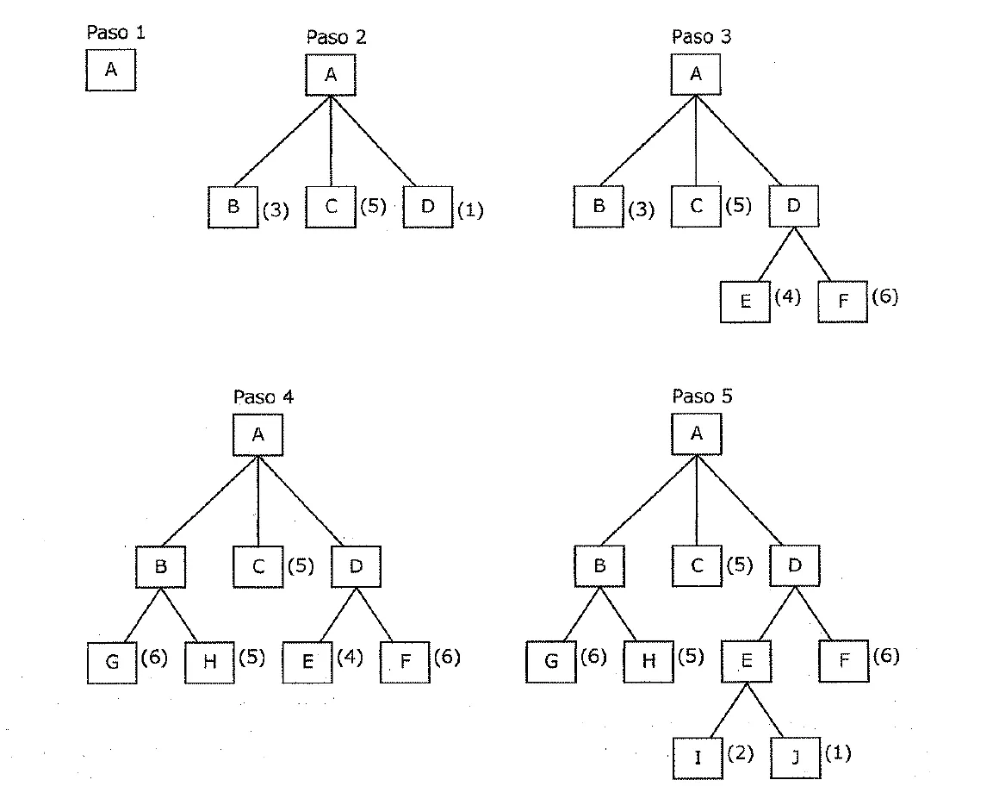
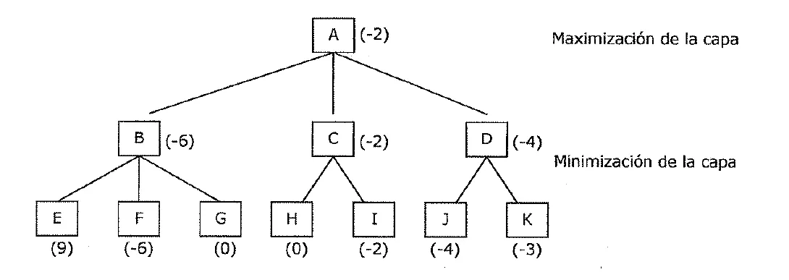
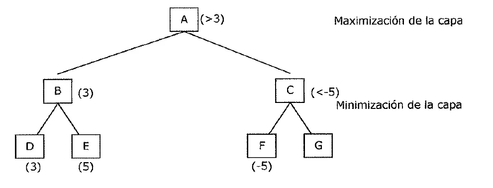
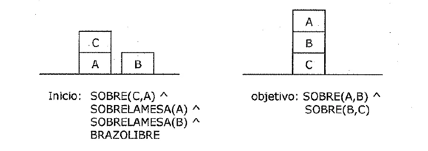

1° parcial
Qué es la IA, cómo se analiza un problema, todas las búsquedas, los juegos, la planificación y lo básico de Prolog.
Resumen no juzgado. Todavía nadie evaluó si alcanza para estudiar solo con esto.
Lo marcado «Plan viejo» es de 2022 o antes, del plan anterior. Puede no coincidir con lo que se toma hoy.
Cómo viene el examen
No hay parciales de 2023 en adelante
En el Drive, los parciales de las Unidades 1 y 2 son de 2019 y 2021. Lo de abajo muestra cómo fueron esos, y la forma puede haber cambiado. Los resúmenes de 2026 siguen trayendo estos temas, así que se siguen dando.
Por campus. Una respuesta incorrecta de ese intento puntuó −0,7, así que en ese examen las incorrectas restaban. Preguntó por búsqueda a ciegas y heurística, análisis del problema, estrategia de control, minimax y planificación.
Por campus. Preguntó por reglas de Prolog, el paradigma, el operador de negación, la disyunción, los hechos, la cola de una lista y la condición de fin de una recursión.
En papel. Mezcla tipos de problema, aproximaciones simbólicas, medios y fines, escalada, primero mejor, verificación de restricciones, minimax contra alfa-beta y planificación.
En papel. Una consulta sobre dos tablas de hechos y una operación con los elementos de una lista. Están en Ejercicios.
Qué es la inteligencia artificial
La IA «tiene por objeto el estudio del comportamiento inteligente en las máquinas. A su vez, el comportamiento inteligente supone percibir, razonar, aprender, comunicarse y actuar en entornos complejos». Fuente: apunte de la cátedra, unidad 1, página 4.
La hipótesis de Newell y Simon
Hipótesis del sistema físico de símbolos
«Un sistema de símbolos físicos posee los medios necesarios y suficientes para realizar una acción inteligente genérica.»
Apunte de la cátedra, unidad 1, página 15
Es solo una hipótesis. Se valida de forma empírica, y el apunte no la da por demostrada. También dice que es «neutral respecto al sustrato». Importa lo que hace el sistema, no de qué está hecho. Fuente: apunte de la cátedra, unidad 1, páginas 5 y 15.
En criollo
La apuesta es que pensar es manipular símbolos. Si eso es cierto, da igual que los símbolos corran en neuronas o en silicio. Por eso una computadora, en principio, podría pensar.
El test de Turing
Hay un hombre, una mujer y un interrogador que los interroga sin verlos, y que tiene que decir quién es quién. Turing pregunta qué pasa si una máquina toma el lugar de uno de ellos. La versión simplificada, donde la máquina solo tiene que pasar por humana, no resulta muy útil. Fuente: apunte de la cátedra, unidad 1, páginas 6 y 7.
Simbólicas y subsimbólicas
| Simbólicas | Subsimbólicas | |
|---|---|---|
| Diseño | Descendente | Ascendente |
| Trabajan con | Símbolos | Señales |
| Niveles | Del conocimiento, simbólico e inferiores | Lo inteligente emerge de abajo hacia arriba |
| Ejemplos | Lógica sobre conocimiento declarativo | Redes neuronales, procesos evolutivos, vida artificial |
Fuente: apunte de la cátedra, unidad 1, páginas 7 y 8.
El comportamiento emergente es producto de la interacción entre la máquina y su entorno. Fuente: apunte de la cátedra, unidad 1, página 8.
IA débil y fuerte, y los inviernos
Sale de apuntes de alumnos
Estos dos temas no aparecen en las páginas que se revisaron del apunte. Salen del resumen de 2026 de un alumno.
- Débil. La que hay hoy. Hace tareas específicas y no tiene conciencia de sí misma.
- Fuerte. Sería comparable con la inteligencia humana en todo. Es teórica y no existe.
- Inviernos. Estancamientos por exceso de expectativas y falta de recursos: 1970 a 1980, 1987 a 1993 y 2004 a 2009.
Fuente: IA - Unidad 1 (resumen 2026), página 3.
Resumen de alumno, 2026
Qué problemas ataca
El apunte separa tareas de la vida diaria, formales y de experto. Y hace notar algo que sorprende. Las habilidades de un experto necesitan menos conocimiento que las tareas comunes. Fuente: apunte de la cátedra, unidad 1, páginas 13 y 14.
En criollo
Armar un sistema que diagnostique una enfermedad puntual resultó más fácil que armar uno con el sentido común de un chico de cinco años.
Qué es una técnica de IA
El conocimiento es voluminoso, difícil de caracterizar, cambia, y se organiza según cómo se usa. Una técnica de IA es un método que usa ese conocimiento así:
- representa generalizaciones,
- lo pueden comprender quienes lo proporcionan,
- se puede modificar,
- sirve aunque no sea totalmente preciso o completo,
- ayuda a acotar las posibilidades.
Las tres técnicas que nombra el apunte son búsqueda, uso del conocimiento y abstracción. Fuente: apunte de la cátedra, unidad 1, página 16.
Plantear el problema
Un sistema de IA hace cuatro acciones:
- Definir el problema con precisión.
- Analizarlo.
- Aislar y representar el conocimiento necesario.
- Elegir la mejor técnica y aplicarla.
Fuente: apunte de la cátedra, unidad 1, página 19; IA - Unidad 1 (resumen 2026), páginas 4 y 5.
Espacio de estados
El espacio de estados es el conjunto de todos los estados posibles. El problema queda como una secuencia de pasos entre estados, y se recorre con un algoritmo de búsqueda. Sirve para definir formalmente el problema y también dice cómo resolverlo. Fuente: apunte de la cátedra, unidad 1, página 19.
Sistemas de producción
Dan una estructura para describir y desarrollar la búsqueda. Tienen cuatro partes:
- Un conjunto de reglas, con una parte izquierda que dice cuándo se aplica y una derecha que dice qué hace.
- Bases de conocimiento.
- Una estrategia de control, que decide cuando se puede aplicar más de una regla.
- Un aplicador de reglas.
Fuente: apunte de la cátedra, unidad 1, página 22; IA - Unidad 1 (resumen 2026), página 6.
Análisis del problema
Antes de elegir un método, el apunte manda a mirar siete preguntas. Fuente: apunte de la cátedra, unidad 1, página 23.
- ¿Se puede descomponer en subproblemas independientes?
- ¿Se pueden ignorar o deshacer pasos?
- ¿Es predecible el universo?
- ¿Una solución es buena sin compararla con las demás?
- ¿La solución es un estado o una ruta?
- ¿Hace falta mucho conocimiento, o solo para restringir la búsqueda?
- ¿La computadora puede dar la solución sola, o tiene que interactuar con una persona?
Descomponible o no
La integral de una suma se parte en integrales más chicas. El mundo de los bloques, en cambio, no se puede descomponer, porque los subproblemas interactúan. Fuente: apunte de la cátedra, unidad 1, páginas 23 y 24.
Ignorables, recuperables y no recuperables
Aparece en los dos parciales. Fijate qué estructura de control pide cada tipo.
| Tipo | Qué pasa con los pasos | Ejemplo | Estructura de control |
|---|---|---|---|
| Ignorable | Se pueden ignorar | Demostrar un teorema | Sencilla, nunca vuelve atrás |
| Recuperable | Se pueden deshacer | 8-puzzle | Vuelta atrás, con una pila «push-down» |
| No recuperable | No se pueden deshacer | Ajedrez | Muchísimo esfuerzo en cada decisión, porque es irrevocable |
Fuente: apunte de la cátedra, unidad 1, páginas 25 y 26.
En criollo
Un lema inútil en una demostración no te molesta. Lo dejás ahí y seguís. Una ficha mal movida en el 8-puzzle la tenés que volver a mover. En el ajedrez, el error ya está hecho y jugás desde ahí.
Consecuencia cierta e incierta
- Consecuencia cierta. El resultado de una acción se puede predecir, como en el 8-puzzle. La planificación genera una secuencia que garantiza llegar a una solución.
- Consecuencia incierta. Como en el bridge. La planificación genera, como mucho, una secuencia con «una buena probabilidad de conducir a una solución». Y hay que revisar el plan mientras se ejecuta.
Los tipos de problemas más difíciles son los irrecuperables de consecuencia incierta. Los ejemplos del apunte son el bridge, el brazo de robot y ayudar a un abogado a defender a un cliente. Fuente: apunte de la cátedra, unidad 1, página 26.
Búsqueda a ciegas
Una estrategia de control tiene dos requisitos: «que cause algún cambio» y «que sea sistemática». Fuente: apunte de la cátedra, unidad 2, página 4.
Explosión combinatoria
Con N objetos hay N! formas de ordenarlos. Los números del apunte muestran lo rápido que crece:
| Objetos | 3 | 4 | 5 | 6 | 10 |
|---|---|---|---|---|---|
| Combinaciones | 6 | 24 | 120 | 720 | 3.628.800 |
Una búsqueda exhaustiva funciona en teoría, pero consume demasiado tiempo o recursos. Fuente: apunte de la cátedra, unidad 2, páginas 4 y 5.
Ramificación y acotación
Genera rutas completas y guarda la más corta hasta el momento. Deja de explorar una ruta en cuanto su distancia pasa a la marcada. Garantiza hallar la ruta más corta, pero el tiempo sigue siendo exponencial. El ejemplo es el viajante de comercio. Fuente: apunte de la cátedra, unidad 2, páginas 5 y 6.
Anchura contra profundidad
- Primero en anchura. Evalúa cada nodo de un nivel antes de pasar al siguiente.
- Primero en profundidad. Sigue una sola rama hasta encontrar la solución o decidir cortar. Ahí hace vuelta atrás al estado más reciente con otra alternativa.
| Anchura | Profundidad | |
|---|---|---|
| Memoria | Guarda todo el árbol generado | Solo los nodos del camino actual |
| Callejones sin salida | No queda atrapada | Puede perder tiempo en ellos |
| Varias soluciones | Encuentra la mínima | Puede dar una larga |
| Suerte | Tiene que revisar cada nivel | Puede encontrarla sin mirar casi nada |
Fuente: apunte de la cátedra, unidad 2, páginas 6 a 9; IA - Unidad 2 (resumen 2026), página 2.
En criollo
Si perdiste las llaves, anchura es revisar un poco cada ambiente de la casa, y después un poco más en cada uno. Profundidad es vaciar por completo el primer placard antes de pasar a otra cosa.
Búsqueda heurística
Una heurística mejora la eficiencia de la búsqueda, y suele sacrificar completitud. Las hay de propósito general y de propósito especial. Un ejemplo es el vecino más próximo, que en cada paso elige la alternativa localmente superior. Fuente: apunte de la cátedra, unidad 2, página 10.
Generación y prueba
- Generar una posible solución.
- Verificar si realmente lo es.
- Si se encontró, terminar. Si no, volver al paso 1.
Hecha de forma sistemática, si la solución existe, en algún momento la encuentra. El problema es que «en algún momento» puede ser demasiado tiempo. Es una búsqueda primero en profundidad, porque las soluciones completas se generan antes de probarlas. Fuente: apunte de la cátedra, unidad 2, página 12.
Hay dos extremos y un punto medio:
- Sistemática. Es una búsqueda exhaustiva por el espacio problema. Lo más sencillo es un árbol primero en profundidad con vuelta atrás. Si algunos estados intermedios se repiten mucho, conviene recorrer un grafo en lugar de un árbol.
- Aleatoria. No garantiza encontrar alguna vez la solución. Se la conoce como algoritmo del Museo Británico, por buscar objetos recorriendo el museo al azar.
- Heurística, el punto medio. Es sistemática, pero no considera algunos caminos porque parecen no llevar a la solución. Eso lo evalúa una función heurística.
Para problemas sencillos, una generación y prueba exhaustiva suele ser razonable. Fuente: apunte de la cátedra, unidad 2, página 12.
Escalada o remonte de colinas
Es una variante de generación y prueba con realimentación. La prueba suma una función heurística que estima cuán cerca está el estado del objetivo. Fuente: apunte de la cátedra, unidad 2, página 13.
- Escalada simple. Prueba operadores de a uno. Si un estado nuevo es mejor que el actual, pasa a ser el actual.
- Máxima pendiente. Considera todos los movimientos desde el estado actual y elige el mejor.
Fuente: apunte de la cátedra, unidad 2, página 14.
Las dos pueden no encontrar solución, porque se traban en un estado del que no salen estados mejores. Fuente: apunte de la cátedra, unidad 2, página 15.
| Trampa | Qué es | Qué ayuda |
|---|---|---|
| Máximo local | Mejor que sus vecinos, pero no que estados de otros lugares | Volver atrás e intentar otro camino |
| Meseta | Área plana, con vecinos del mismo valor | Un gran salto en alguna dirección |
| Cresta | Máximo local especial, imposible de cruzar con movimientos simples | Aplicar dos o más reglas antes de evaluar |
Estos métodos no dan garantías. Fuente: apunte de la cátedra, unidad 2, página 15.
En criollo
Imaginá que subís una montaña con niebla, y solo ves un paso alrededor. Si llegás a un cerrito, todo baja y creés que llegaste a la cima. Eso es un máximo local. Si estás en un llano, ningún paso cambia nada y no sabés para dónde ir. Eso es la meseta.
El primero mejor
Combina las ventajas de anchura y profundidad. Sigue un camino, y lo cambia cuando otra ruta parece más prometedora. En cada paso se selecciona «el nodo más prometedor que se haya generado hasta ese momento». La rama vieja no se olvida. Su último nodo queda guardado, y la búsqueda puede volver a él. Fuente: apunte de la cátedra, unidad 2, páginas 17 y 18.

En la figura, el número es una estimación del costo, y por eso gana el más bajo. Después de expandir D aparecen E(4) y F(6). Entonces B(3) pasa a ser el mejor, y la búsqueda salta a esa rama. Fuente: apunte de la cátedra, unidad 2, página 18.
Se implementa con dos listas: nodos abiertos, generados y aún sin examinar, y nodos cerrados, ya examinados. Fuente: IA - Unidad 2 (resumen 2026), página 4.
Reducción de problemas
Convierte metas difíciles en submetas más fáciles, que pueden dividirse otra vez. También se la llama reducción de metas. Fuente: apunte de la cátedra, unidad 2, página 24.
Se dibuja como un árbol de metas, o árbol Y-O:
- Meta Y. Se satisface cuando se satisfacen todas sus submetas.
- Meta O. Se satisface cuando se satisface cualquiera de sus submetas.
- Meta hoja. Se satisface directo, sin submetas.
Permite responder preguntas de «cómo» y «por qué». Fuente: IA - Unidad 2 (resumen 2026), página 5.
Verificación de restricciones
El objetivo es «descubrir algún estado del problema que satisfaga un conjunto dado de restricciones». Consta de dos pasos. Fuente: apunte de la cátedra, unidad 2, página 28.
- Propagación. Se descubren las restricciones y se propagan tan lejos como se pueda.
- Búsqueda. Si todavía no hay solución, se hace una suposición, se la agrega como restricción y se propaga de nuevo.
La propagación termina por una de dos razones. O se detecta una contradicción, o no se pueden hacer más cambios con lo que se sabe. Si la contradicción viene solo de las restricciones dadas por el problema, no existe solución. Fuente: apunte de la cátedra, unidad 2, página 28.
En criollo
Es como el Sudoku. Primero anotás todo lo que sale seguro. Cuando te trabás, probás un número en lápiz y seguís. Si eso lleva a un absurdo, borrás el lápiz.
Análisis de medios y fines
Se centra en detectar diferencias entre el estado actual y el objetivo. Después busca un operador que reduzca una diferencia. Pueden aparecer dos subproblemas:
- Si el operador no se puede aplicar todavía, hay que alcanzar un estado donde sí se pueda.
- Si el operador no deja justo en el objetivo, hay que llegar desde ahí.
Se aplica de forma recursiva. Las reglas tienen un lado izquierdo con las precondiciones y uno derecho con lo que cambia. La tabla de diferencias ordena las reglas según las diferencias que pueden reducir. El primer programa que lo usó fue GPS, de Newell y Simon. Fuente: apunte de la cátedra, unidad 2, página 31.
Juegos
Minimax
Se generan los movimientos posibles hasta cierta profundidad y se aplica una función de evaluación estática a las hojas. Los valores se propagan hacia la raíz. En tu capa elegís el máximo, y en la del oponente se elige el mínimo. «La alternancia de maximización y minimización en capas alternas» le da el nombre. Fuente: apunte de la cátedra, unidad 2, páginas 35 a 37.

Probá cambiar las hojas de ese ejemplo y mirá cómo se mueven los valores que suben. Los valores iniciales son los del apunte.
Sirve para chequear un resultado. En el examen va el desarrollo que pide la cátedra.
En el ejemplo, el movimiento correcto es C, «puesto que no hay nada que el oponente pueda hacer ahí para producir un valor peor que −2». Fuente: apunte de la cátedra, unidad 2, página 37.
En criollo
Si solo mirás tu jugada, B parece tentador porque tiene un 9 adentro. Pero el que elige ahí es el rival, y te va a dar el −6. Vos jugás pensando en lo peor que te puede hacer el otro.
Poda alfa-beta
Minimax se mejora con ramificación y acotación. Requiere «dos valores umbral, uno que representa la cota inferior del valor que puede asignarse en último término a un nodo maximizante (alfa) y otro que represente la cota superior del valor que puede asignarse a un nodo minimizante (beta)». Fuente: apunte de la cátedra, unidad 2, páginas 37 y 38.

En la figura, B asegura un 3. Al ver F = −5, C ya vale −5 o menos. Es peor que B, así que G no hace falta mirarlo. Fuente: apunte de la cátedra, unidad 2, página 38.
En criollo
Un amigo te ofrece elegir entre dos bolsas, y de la bolsa que elijas él te da la peor cosa. En la primera bolsa viste que lo peor vale 3. Abrís la segunda y lo primero que aparece vale −5. No necesitás seguir mirando esa bolsa. Como mucho te da −5, y ya tenés un 3 seguro.
Algoritmos genéticos
Son métodos adaptativos basados en la evolución. Una posible solución se codifica en un cromosoma, formado por genes. La aptitud de cada individuo se mide con una función de evaluación. Fuente: apunte de la cátedra, unidad 2, páginas 43 a 47.
Cuatro diferencias con los métodos tradicionales:
- Trabajan con una codificación de los parámetros, no con ellos directamente.
- Buscan en una población de puntos, no en uno solo.
- Usan la función objetivo, no derivadas u otro conocimiento auxiliar.
- Usan reglas de transición probabilísticas, no determinísticas.
Fuente: apunte de la cátedra, unidad 2, página 45.
No garantizan encontrar la óptima, pero suelen dar soluciones aceptables en poco tiempo. Donde existan técnicas especializadas, estas les ganan en velocidad y en precisión. Los operadores son selección, cruce (crossover), mutación y migración. Fuente: apunte de la cátedra, unidad 2, páginas 45 y 46; IA - Unidad 2 (resumen 2026), página 10.
Planificación
Planificar es calcular varios pasos de la solución antes de ejecutar ninguno. Se estudia sobre el mundo de los bloques, con un brazo robot. Fuente: apunte de la cátedra, unidad 2, página 52.
Un sistema de planificación tiene que hacer cinco cosas:
- Elegir la mejor regla para aplicar.
- Aplicarla para calcular el nuevo estado.
- Detectar cuándo llegó a una solución.
- Detectar callejones sin salida.
- Detectar cuándo una solución es casi correcta, y arreglarla.
Fuente: apunte de la cátedra, unidad 2, página 53; IA - Unidad 2 (resumen 2026), página 11.
STRIPS describe cada operador con tres listas: PRECONDICIÓN, AÑADIR y BORRAR. Así no hace falta repetir todo lo que no cambia. Fuente: apunte de la cátedra, unidad 2, página 58.
| Técnica | Idea | Fuente |
|---|---|---|
| Pila de objetivos | Una pila con objetivos y operadores. Resuelve los objetivos por orden, uno cada vez | Unidad 2, páginas 58 y 64 |
| No lineal | Un plan entrelazado que trabaja «simultáneamente con múltiples subproblemas» | Unidad 2, página 64 |
| Jerárquica | Resuelve primero lo más crítico y deja los detalles para después, con valores de criticidad | Unidad 2, páginas 64 y 65 |
| Sistemas reactivos | Evitan planificar y reaccionan a la situación observable. Eligen una acción cada vez | Unidad 2, página 65 |
La anomalía de Sussman muestra por qué hace falta un plan no lineal. Los objetivos interactúan, y lograr uno deshace el otro. Fuente: apunte de la cátedra, unidad 2, páginas 63 y 64.

En criollo
El termostato es el reactivo más simple que da el apunte. No planifica el día ni mira el pronóstico. Si hace calor prende, y si hace frío apaga. Y aun así funciona.
Prolog básico
El nombre viene de PROgramming LOGic. Se describe el problema, en vez de programar el procedimiento. Fuente: apunte de la cátedra, unidad 4, página 4.
Hechos, reglas y variables
Un hecho afirma algo. Una regla es un hecho que depende de otros, con la forma cabeza :- cuerpo. Las variables empiezan con mayúscula, y _ es la variable anónima. Fuente: diapositivas de Prolog de la cátedra, 1 Introducción; Programación práctica en Prolog, página 6.
Operadores
,es la conjunción y;es la disyunción. La disyunción también se representa «poniendo cada miembro de la disyunción en una cláusula aparte. Esta última será la forma en la que trabajaremos». Fuente: Programación práctica en Prolog, página 8.not/1es la negación, como enfeliz(X):-not(observa(X,felicia)).Fuente: Programación práctica en Prolog, páginas 8 y 9.=es una comprobación lógica.X=3+2no da 5. Para calcular se usais. Fuente: Programación práctica en Prolog, páginas 8 y 14.
Recursividad y condición de fin
Toda recursión necesita un caso que la corte. En el factorial, ese caso es factorial(0,1).
factorial(0,1).
factorial(N,F) :- Ant is N-1,
factorial(Ant,FA),
F is N * FA.Fuente: diapositivas de Prolog de la cátedra, 3 Recursividad.
Una lista se parte en cabeza y cola con [H|T], y su caso de corte es la lista vacía []. Lo demás de Prolog, con listas y base de datos, está en el final.
Quiz del 1° parcial
Elegí una opción para ver la explicación. Las que dicen «Se tomó» salieron de exámenes reales.
- 1
¿Qué tipo de problema requiere un sistema que aplique muchísimo esfuerzo en la toma de decisiones, porque son irrevocables?
Se tomó: Parcial 30/06/2021, adaptada Plan viejo
En los no recuperables los pasos no se pueden deshacer, como en el ajedrez. Por eso cada decisión cuenta.
- 2
¿Qué estructura de control implementa la vuelta atrás en los problemas recuperables?
Se tomó: Parcial 30/06/2021, adaptada Plan viejo
Las decisiones se guardan en la pila por si hay que deshacerlas más tarde.
- 3
Según el apunte, ¿cuáles son de los tipos de problemas más difíciles de resolver?
Planificar una solución completa antes de actuar solo sirve con consecuencia cierta. Sin eso, y sin poder deshacer, queda lo más difícil. El apunte da como ejemplos el bridge y el brazo de robot.
- 4
¿Qué caracteriza a las aproximaciones subsimbólicas?
Las subsimbólicas son ascendentes y trabajan con señales. Lo descendente y los niveles son de las simbólicas.
- 5
¿Cuáles son los dos requisitos de una buena estrategia de control?
El apunte pide exactamente esos dos: que cause algún cambio y que sea sistemática.
- 6
¿Qué ventaja tiene la búsqueda primero en profundidad sobre la de anchura?
Anchura debe guardar todo el árbol generado. Las otras tres opciones hablan de anchura, no de profundidad.
- 7
¿Qué búsqueda representa una forma de combinar las ventajas de primero en anchura y primero en profundidad?
Se tomó: Parcial 30/06/2021, adaptada Plan viejo
El primero mejor sigue un solo camino, y lo cambia cuando otra ruta parece más prometedora.
- 8
En la escalada, ¿qué ayuda especialmente a superar una meseta?
El gran salto va a otra parte del espacio. Volver atrás sirve para máximos locales, y varias reglas juntas, para crestas.
- 9
¿Qué técnica convierte metas difíciles en submetas más fáciles de lograr?
Se tomó: Parcial 30/06/2021, adaptada Plan viejo
La reducción de problemas, también llamada reducción de metas.
- 10
¿Qué significa que la propagación de restricciones termine porque detectó una contradicción en las restricciones dadas por el problema?
Si la contradicción se refiere solo a las restricciones de la especificación, y no a suposiciones, no existe solución.
- 11
En la poda alfa-beta, ¿qué representa alfa?
Alfa es la cota inferior de un nodo maximizante. Beta es la cota superior de un nodo minimizante.
- 12
¿Qué plantean los sistemas reactivos?
Eligen una acción cada vez, y no anticipan una secuencia completa. El ejemplo del apunte es el termostato.
- 13
Explicá la diferencia entre la escalada simple y la de máxima pendiente.
Ver qué dice el material
La simple pasa al primer estado que sea mejor que el actual. La de máxima pendiente considera todos los movimientos desde el estado actual y elige el mejor.
¿Cómo te fue?
Todavía no respondiste ninguna.